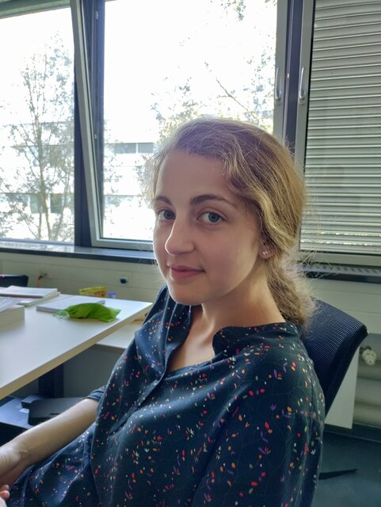

PhD Candidate, Technical University of Munich · Intern, Qualcomm AI Research
I am a PhD candidate at the Technical University of Munich (Chair for Computer Vision & Artificial Intelligence), advised by Prof. Daniel Cremers, and currently interning at Qualcomm AI Research. My research spans visual SLAM and 3D reconstruction, spatial AI, and open-vocabulary 3D scene understanding. Before my PhD, I completed my Master's in Informatics at TUM (2017–2021, thesis published at ICRA 2021) and my Bachelor's in Computer Science at Constructor University (formerly Jacobs University Bremen, 2014–2017).
Direct visual odometry, multi-object tracking, and relocalization for robust camera and scene estimation.
Cross-modal image–LiDAR place recognition and large-scale localization for autonomous systems.
Diagnostic benchmarking of open-vocabulary 3D detectors, 4D scene segmentation, and controllable Gaussian splatting.
GCPR, 2024
Experiments in Fluids, 2024
IROS, 2022
ICRA, 2021